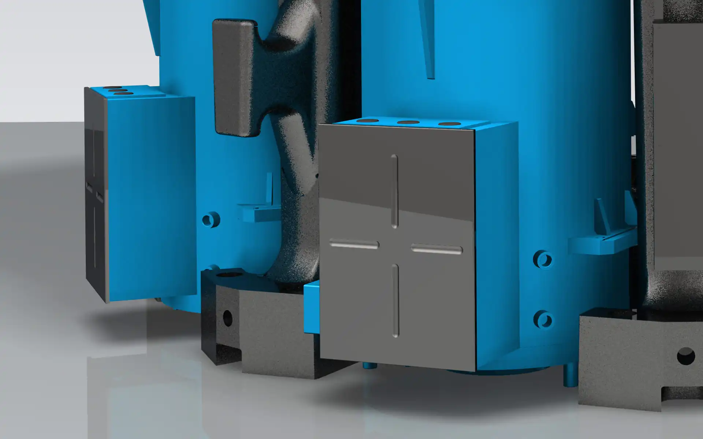
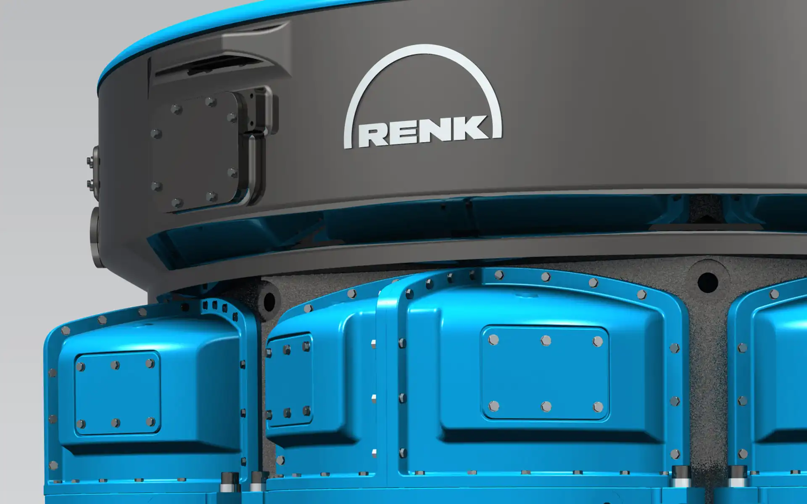
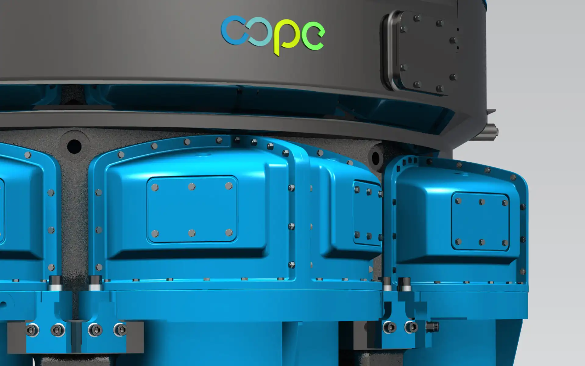
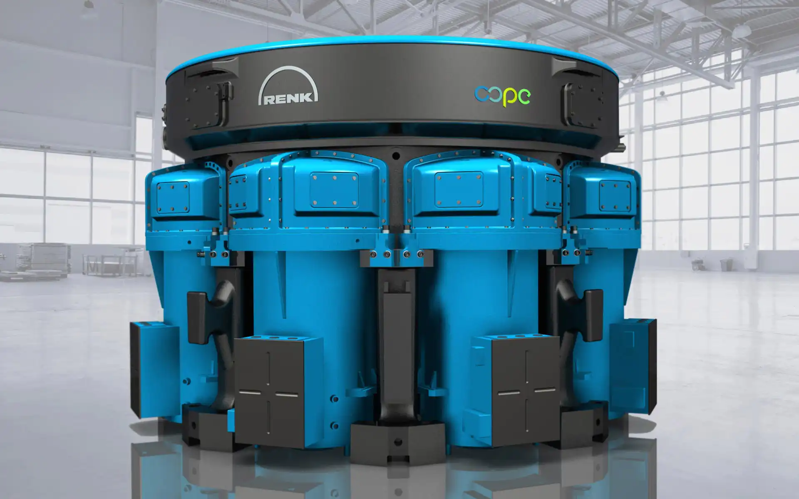

RENK COPE
VRM Drive Unit
RENK COPE
VRM Antrieb
The RENK COPE is a drive unit for vertical roller mills in the cement industry, as well as clinger and
slag grinding.
The gearbox features 8 identical, maintenance-free induction motors providing up to 13 MW, which are
compact and located directly to the planetary gearbox. With this drive, up to 100% of the mill power can
be achieved, even if fewer motors are in operation. Every single motor can be serviced or exchanged during
operation by pulling it out sideways, which greatly increases the servicing friendliness. With the same
external dimensions as a conventional planetary gear system, the RENK COPE gearbox does not require a
significant expansion of the mill foundations.
The design shows the compactness and the technical reliability of the machine. There is no additional
styling trim. The function and lubrication of the gear stage can be observed via two inspection windows
per engine block. The octagonally arranged motors around the circular drive core are distinctive and
become a unique selling proposition in the market.
Die RENK COPE ist ein Antrieb für Vertikalwalzenmühlen in der Zementindustrie, der Klinger- und der
Schlackenmahlung.
Das Getriebe verfügt über 8 identische, wartungsfreie Induktionsmotoren mit einer Leistung von bis zu 13
MW, die kompakt und direkt am Planetengetriebe angeordnet sind. Mit diesem Antrieb können bis zu 100% der
Mühlenleistung erreicht werden, selbst wenn weniger Motoren in Betrieb sind. Jeder einzelne Motor kann
während des laufenden Betriebes durch seitliches Herausfahren gewartet oder getauscht werden, wodurch die
Servicefreundlichkeit immens gesteigert wird. Mit den gleichen Außenmaßen wie ein herkömmliches
Planetengetriebe erfordert das RENK COPE-Getriebe keine wesentliche Erweiterung der Mühlenfundamente.
Das Design zeigt die technische Zuverlässigkeit der Maschine. Die Funktion und Schmierung der
Getriebestufe kann über zwei Sichtfenster pro Motorblock beobachtet werden. Die oktogonal angeordneten
Motoren um den runden Antriebskern sind einzigartig am Markt und werden zum Alleinstellungsmerkmal.




Images © Selić Industriedesign